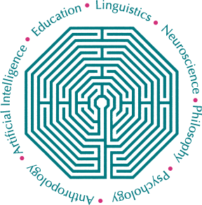

Apresentação
Brasileiro, natural de Resplendor/MG.
Formação
- Bacharel em geologia
- Graduando em tecnologia de análise e dessenvolvimente de sistemas
Interesses
- Matemática
- Física
- Ciências da Computação
- Ciências da Cognição
FAQ
Q: Quantos anos você têm?
A: 35 anos.
Q: Quantos anos como geólogo?
A: 4 anos.
Recursos

Conheça mais sobre um dos meus interesses mais recentes em: Cognitive Science Society.